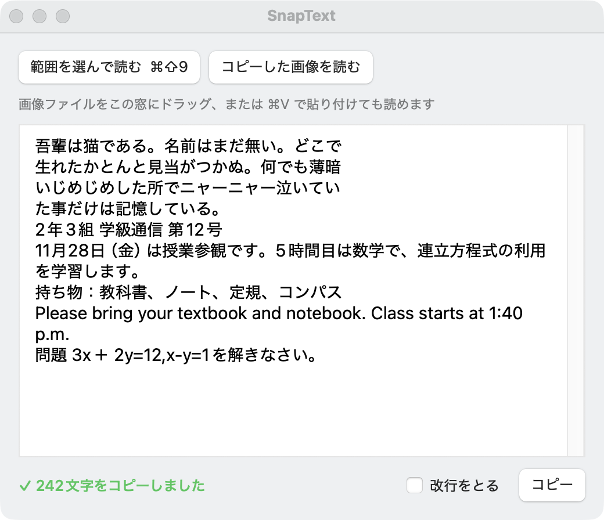

使い方
- キーを押すMac は ⌘ shift 9、Windows は Ctrl Shift 9
- 範囲を囲む読みたい部分をマウスでドラッグします
- 貼り付ける文字はもうコピーされています。⌘/Ctrl + V で貼り付け
画像ファイルを窓にドラッグしたり、窓で貼り付けたりしても読めます。「改行をとる」にチェックを入れると、改行のない文章にしてコピーし直します。
はじめて開くとき
- ダウンロードした zip を開き、中の SnapText.app を「アプリケーション」フォルダに入れます。
- SnapText.app をダブルクリック。「"SnapText"は開いていません」と出たら「完了」を押します。
- システム設定 →「プライバシーとセキュリティ」を開いて下へスクロールし、「このまま開く」を押します（パスワードか Touch ID を入れます）。
- ⌘ shift 9 を押し、「画面収録」の許可を求められたら「システム設定を開く」→ SnapText をオン →「終了して再度開く」。
何度も許可を求められる、または範囲を選んでも何も出ないときは：システム設定 →「プライバシーとセキュリティ」→「画面収録」で SnapText を選んで「−」で消し、「＋」からアプリケーションの SnapText.app を選び直してください。
- ダウンロードした zip を右クリック →「すべて展開」。
- 中の SnapText.exe を好きな場所（例：ドキュメント）に置いてダブルクリック。インストールや管理者権限はいりません。
- 「Windows によって PC が保護されました」と出たら「詳細情報」→「実行」を押します。
- 画面右下（通知領域）に SnapText のアイコンが出ます。メニューの「Windows の起動時に自動で起動」を選ぶと、毎回開く手間がなくなります。
「日本語の文字認識が入っていません」と出たら：設定 → 時刻と言語 → 言語と地域 → 日本語の「…」→ 言語のオプション →「光学式文字認識」を追加してください。
よくある質問
画像や文字がどこかに送られることはありますか？
ありません。読み取りは Mac・Windows に入っている文字認識（Windows の縦書きは同梱の Tesseract）を使い、すべてお使いのパソコンの中で行います。
縦書きはどのくらい読めますか？
Mac 版は macOS 26 以降なら縦書きもほぼ正確に読めます（macOS 15 では横書きだけ）。Windows 版は、縦書きらしいと判断すると縦書き用の読み取りに自動で切り替えます。まちがえたときは窓の「縦書きとして読み直す」を押してください。縦書きと横書きが混ざっている範囲は、分けて囲むときれいに読めます。
開くときに警告が出るのはなぜですか？
Apple・Microsoft の有料の署名をしていないためです。上の「はじめて開くとき」の手順で開けます。
お金はかかりますか？
かかりません。登録も広告もありません。